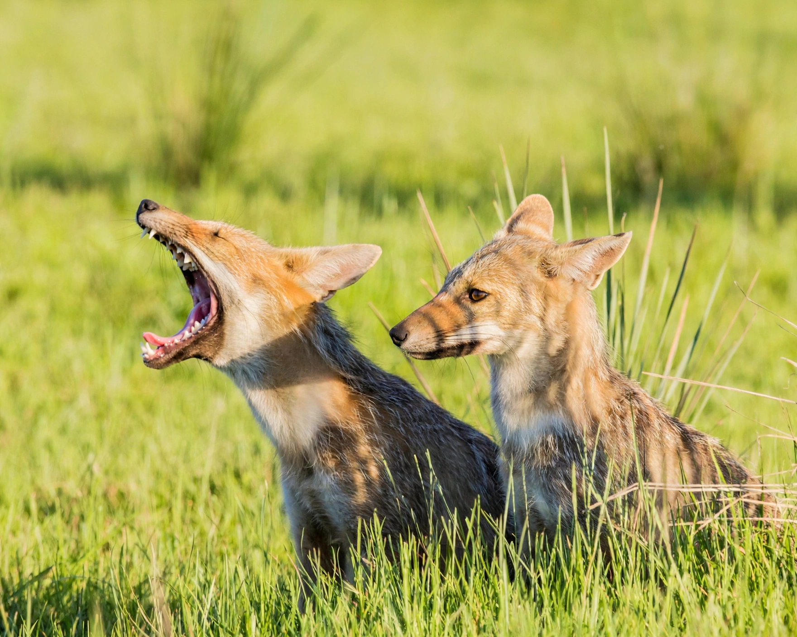
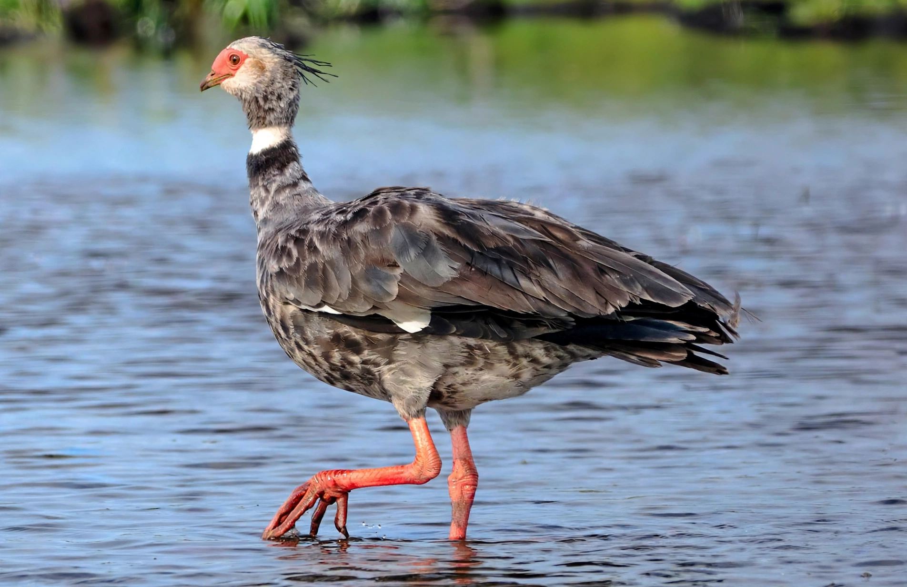
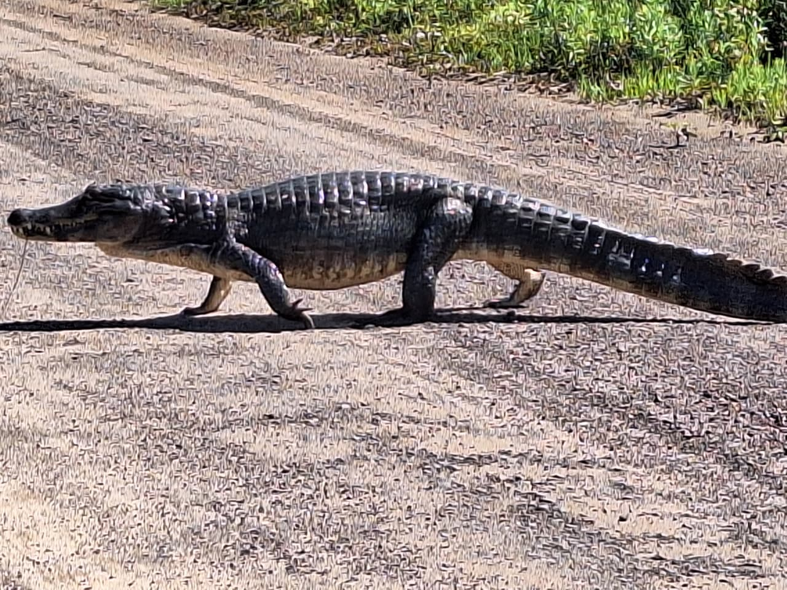
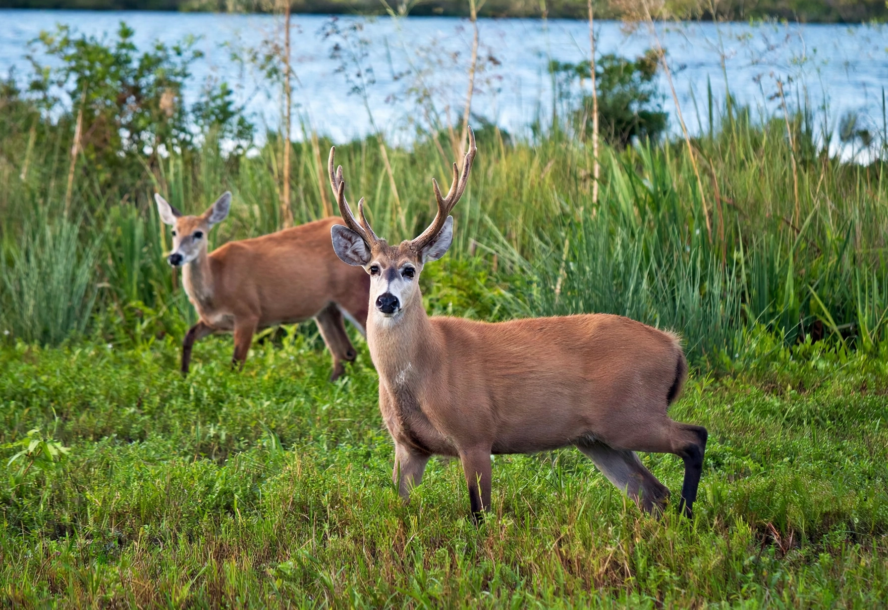
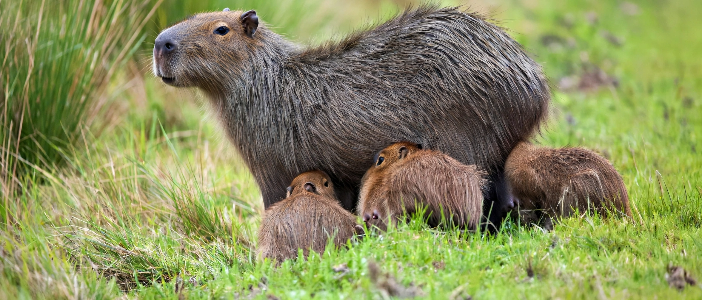
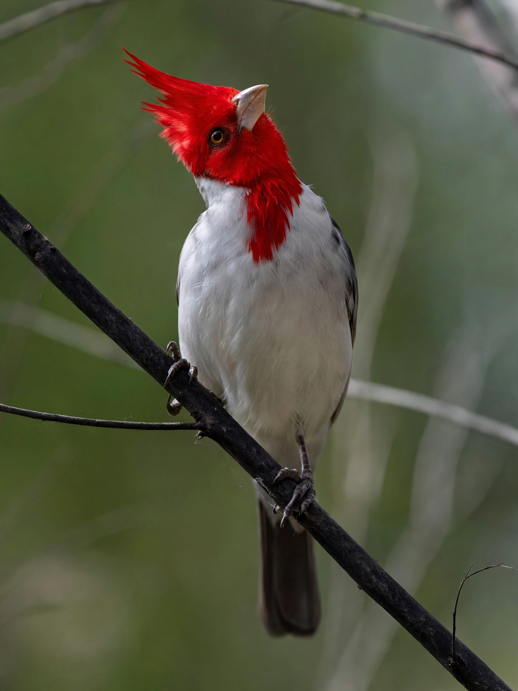
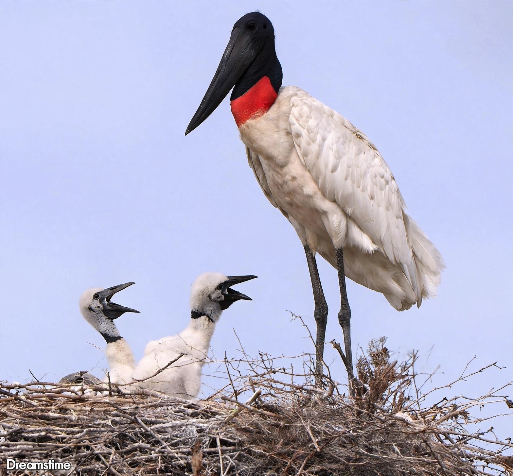

Biodiversidad
Corrientes se puede dividir en tres grandes unidades geomorfológicas muy bien definidas: lomas y planicies embustidas del noroeste y el oeste; depresión iberana, que atraviesa diagonalmente la provincia de nordeste a sudoeste y planicie ondulada del sector oriental; y es en las estribaciones de la segunda unidad denominada depresión iberana, en la que se encuentra comprendida Palmar Grande, formada por una serie de lomadas arenosas, pero también amplias planicies inundables. Estas lomadas también presentan una atractiva formación de parques con especies mixtas de los ambientes chaqueños y misioneros, tapizadas por numerosas lagunas y esteros.
El espacio se encuentra fuertemente parcelado y dedicado a la ganadería tradicional y en menor medida a la agricultura. Debido a la gran abundancia de agua en corrientes que discurren mansas, y la presencia de lagunas y esteros; a lo que se suma la calidez del clima subtropical, se da lugar a una vegetación exuberante y muy variada. Son característicos de la zona, los quebrachos blancos y colorados, las palmeras caranday en gran abundancia, la tala, el espinillo, el cardo, gramíneas y cactos. Acompañando las márgenes de los esteros y arroyos crecen tacuaras, timbó, guayaibí, lapacho, curupí, y otras poblaciones vegetales que dependen de humedales como grandes praderas sumergidas y extensas franjas marginales de juncos y plantas anfibias
Este ecosistema es también propicio para albergar peces sedentarios y gran abundancia de pirañas, así como también gran número de reptiles como el lagarto, yacaré, y la iguana o teyú taragüí; víboras, serpientes y lagartijas.
En este ambiente tiene su habitad natural una variada fauna, en la que abunda el coatí, la yarará, la mulita, el ciervo de los pantanos, el carpincho, el aguará chaí, la nutria y el guazú virá, además de distintas especies de tatúes y monos. Es de destacar que en estos lares todavía existe el aguará guazú, que en la actualidad se encuentra en peligro de extinción. Gran variedad de aves como el pitogüé, el ñacurutú, la cotorra, la perdiz, el chajá, el ñandú, el pájaro carpintero, el flamenco, la garza, entre otros; se anidan en esta zona, adornándola con sus cantos y colores.
Las condiciones climáticas del pueblo de Palmar Grande, son bastante homogéneas, ya que no existen obstáculos para el desplazamiento de las masas de aire; el clima subtropical y de transición acumulativa o de pampa húmeda, debido a los grandes espejos de agua que la circundan. Con una temperatura media de 21° C aproximadamente, con precipitaciones anuales media de 1.206 mm. Escaseando las estaciones de sequía en gran importancia, salvo algunas mermas cada 4 ó 6 años.
Algunas de las especies que podemos encontrar en los alrededores de Palmar Grande:

Nombre: Lycalopex gymnocercus (Aguará chaí)
Descripción Presenta un pelaje denso que mezcla negro con blanco amarillento, lo que le da un lomo predominantemente oscuro o grisáceo. Las orejas y la cara son de un tono ocre amarillento o rojizo pálido, y su rasgo distintivo es la quijada de color negro. Debido a su alimentación, actúa como un excelente controlador biológico de plagas de roedores y cumple un rol fundamental como dispersor de semillas para la regeneración del monte nativo correntino
Lugares de observación: Pastizales, zonas de malezales, montes nativos y ambientes abiertos

Nombre: Chauna torquata (Chajá)
Descripción:El Chajá es una de las aves más grande de los humedales con una altura de 80 centímetros de altura y la envergadura de sus alas de punta a punta pueden medir hasta 1,7 metros. Su cuerpo es robusto y puede alcanzar un peso entre 3 y 5 kg. Tiene un plumaje mayormente gris con un collar blanco distintivo en el cuello. El Chajá habita en zonas pantanosas, lagunas esteros, pastizales húmedos y áreas ribereñas. Prefiere ambientes acuáticos o semiacuáticos con buena disponibilidad de vegetación acuática y áreas abiertas donde puede desplazarse fácilmente
Lugares de observación: Cañada fragoza

Nombre: Caiman yacare (Yacare negro)
Descripción:Tiene el hocico más angosto y alargado. Puede medir entre 1,2 1,4 metros y alcanzar un peso de hasta 50 kg. Su cuerpo es de color verde oscuro con manchas bien marcadas, especialmente en la cabeza y la cola y el vientre es amarillento. Se lo puede avistar en ríos, esteros, lagunas, y zonas pantanosas
Lugares de observación: Cañada fragosa, Esteros

Nombre: Blatocerus dichotomus (Ciervo de los pantanos)
Descripción: Es el ciervo más grande de Sudamérica, alcanzado hasta 1,30 metros de altura y entre 100 y 150 kg de peso. Su pelaje es marrón rojizo y posee grandes astas bifurcadas. Sus patas largas presentan membranas interdigitales que le permiten desplazarse entre terrenos inundados. es un animal solitario y de hábitos crepusculares. El ciervo de los pantanos habita en los humedales especialmente en los esteros del Ibera, Parque Nacional Murucuyá.
.jpeg "imagen ilustrativa de un penitente (Espatula rosada)")
Nombre: Platalea ajaja (Espatula rosada, Cuchara)
Descripción: 70-80cm. Rosada, con pico ancho y aplanado de color gris celeste salpicado de negro. Patas rojizas. Cara sin plumas, anaranjada, con periocular amarillento. Franja negra o gris, que se extiende desde la parte posterior de la cabeza a la mandíbula. Resto de plumje rosado, mas intenso en ventral y rabadilla. Especies inconfundible. Los flamencos son mas grandes, de cuello y de pata mas largas y con el pico curvo
Lugares de observación: Esteros, lagunas, bañados, charcos. Siempre en tierras bajas

Nombre: Hydrochoerus hydrochaeris (Carpincho)
Descripción:El carpincho puede medir hasta 1,30 metros de largo y pesar entre 40 y 60 kg. Tiene el cuerpo robusto, cubierto de pelo marrón, cabeza grande, orejas pequeñas y ojos ubicados en la parte superior, lo que le permite observar mientras está en el agua. Sus patas son cortas pero fuertes, adaptadas para nadar y moverse en el barro. Suele estas más activos durante la mañana y al atardecer.
Lugares de observación: Vive en zonas cercanas al agua como esteros y zonas inundadas

Nombre: Paroaria coronata (conocido localmente como cardenal copetón rojo)
Descripción: 19 cm. Llamativa cabeza y babero de color rojo. Bermellón. Lados del cuello forman un collar y partes ventrales blancas. Nuca y resto dorsal gris. Pico blanquecino y patas grises. Juvenil: tiene la cabeza parda, la que paulatinamente se va pintando de rojo. Las partes dorsales paradas y el pico oscuro.
Lugares de observación: Montes arbustivos abiertos: talares, ñandubaizales, algarrobales y otros

Nombre: Jabiru mycteria (Yabirú, Jabirú, Garzón soldado)
Descripción: Gran cigueña de enorme pico negro levemente curvado hacia arriba. Macho y hembra similares: cabeza negra y cuello largo abultado, de color negro y base roja, ambos sin plumas. Cuerpo y alas de color blanco. Patas largas negruñas. Juvenil: blanco con manchas pardas y collar rosáceo.
Lugares de observación: Esteros, pajonales, sabanas y campos inundados con arboles dispersos